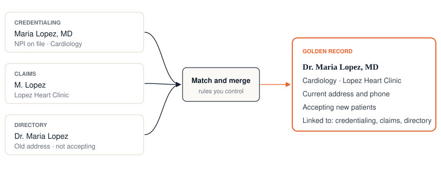

One record for every member and every provider.
We implement and modernize Informatica MDM for health plans and providers, scoped around the outcome you need and priced up front wherever we can. Tell us about your project and you'll have a cost range and timeline within 72 hours.
What kind of MDM project is it?
New Informatica MDM implementation→ Moving an on-prem hub to MDM SaaS→ Adding member, provider or another domainWe'll scope this one on a short call→ Replacing another MDMWe'll scope this one on a short call→Takes about five minutes. A person on our team reviews every answer. You're not signing up for anything.
 and a national health insurer (below)
and a national health insurer (below)
Where MDM pays back in healthcare
Health plans hold the same member in enrollment, claims, care management and the member portal, and the same provider in credentialing, contracting, claims and the directory. Each system keeps its own copy. MDM pays back when one trusted record shows up in the places people work.

Member 360
One record per member across eligibility feeds, claims and care management, so outreach, care coordination and reporting all count the same person once.
Provider data
One provider record shared by credentialing, contracting, claims and the directory, which makes directory accuracy something you can show rather than chase.
Analytics and AI
Quality reporting, risk models and AI agents all need to know which records are the same person. Resolved data gets them out of pilots and into production.
Leaving another MDM
A planned move to Informatica MDM, with golden records seeded and parity proven before cutover, timed against your renewal date.
Recent healthcare work
A national health insurer needed to leave its cloud MDM vendor before a hard renewal date.
Two-domain move off a non-Informatica cloud MDM
We moved two domains to Informatica MDM and seeded golden records so they matched exactly at cutover. The insurer could see parity on day one rather than take it on trust, and it left its incumbent vendor ahead of the deadline.
How pricing works
You get a number first and a contract later. Nothing in between asks you to commit.
- Answer the questionnaireAbout a dozen questions on your members, providers or other entities, the source systems, volumes and the outcome you want.
- Get a written estimate within 72 hoursA cost range, a timeline in weeks and a complexity rating with our reasoning.
- Talk it through in 45 minutesWe go over the estimate and pick up anything the questions missed.
- Receive a formal proposalPrecise scope, a firm price and a delivery timeline.
Member and provider MDM on Informatica MDM SaaS
- Cost range
- to
- Timeline
- weeks
- Complexity
- Medium
- Pricing
- Fixed price
Common questions
We already run Informatica MDM on-prem. Can you move it to SaaS?
Yes. We plan for your existing member and provider golden records and prove parity before cutover, so the systems that depend on the hub keep working.
We're on a different MDM. Can you replace it before our renewal?
That's what we did for the national health insurer above. Replacements have more moving parts, so we scope them on a call and then give you a number and a timeline you can plan against.
How long does a member or provider MDM project take?
It depends on the number of sources, volumes and the systems that need the data. Your estimate gives you the timeline in weeks, based on your answers.
How can you fix a price for MDM?
We scope around one or two specific use cases, so the project comes down to a short list of known inputs. If yours needs discovery first, we'll say so and shape the work around it.
Tell us about your project
For domain expansions, replacements and integrations, or anything you'd rather talk through first. An MDM consultant will reply.
Or use the 5-minute questionnaire for a written estimate.
Email us directly at info@zclap.com